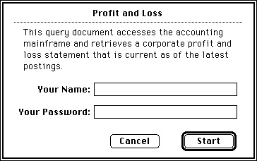

Legacy Document
Important: The information in this document is obsolete and should not be used for new development.
Important: The information in this document is obsolete and should not be used for new development.


User Interface Guidelines for Query Documents
All query documents should behave in fundamentally the same way. They should be self-explanatory and should never execute a query without an explicit command from the user. When your application opens a query document, the query document should display a dialog box with enough information about the query so that the user can decide if it's the right query. The dialog box should describe the purpose of the query, what kind of data it transfers and in which direction, the type of data source it accesses, and any warnings or instructions. The dialog box can describe how the user interprets the data, such as the name of each field in a record. Figure 12-6 shows an example of a query document dialog box.Figure 12-6 A query document dialog box

This dialog box should allow the user to cancel the request for data. In addition, it may be useful to allow the user to set parameters with text boxes, checkboxes, or radio buttons. For example, a query to a database of financial information could provide a list of these options: a trial balance, profit-and-loss statements, or net worth reports. Save the last set of user-specified parameters with the query document. This way the user can review the parameters used to generate the data or use the same parameters the next time.
Once a query starts running, it must be able to complete its task without user intervention. If a query must run modally (that is, it must run to completion before returning control to the user), display a dialog box that shows the query's progress and be sure to return control to the user as soon as possible. The philosophy of this process is similar to that of receiving electronic mail--that is, inform the user when the information arrives, but let the user decide when to read it.
Whenever possible, query documents should check that data is compatible before transmitting it to a data source. Establish a connection with a data source only after you have checked the data.